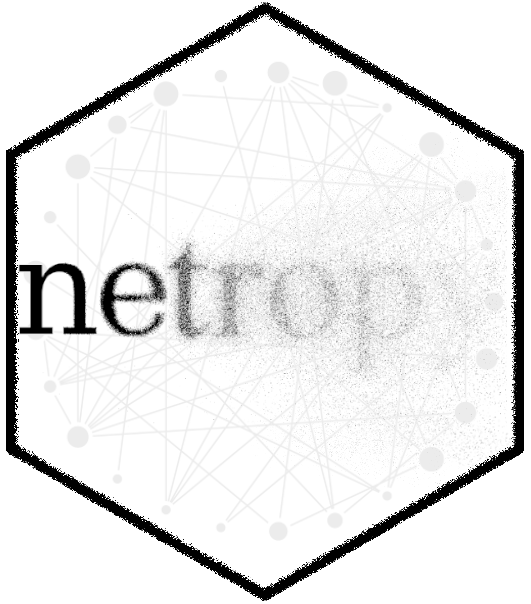
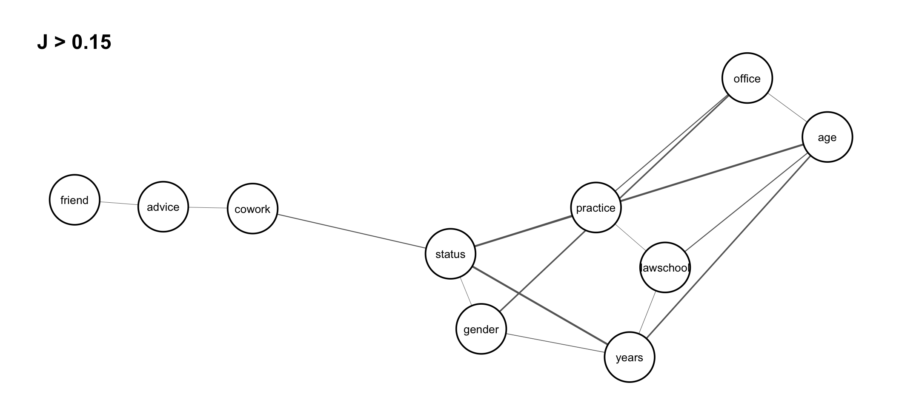

library('netropy')Statistical Entropy Analysis of Network Data
Project summary
In multivariate statistics, there is an abundance of different measures of centrality and spread, many of which cannot be applied on variables measured on nominal or ordinal scale. Since network data in majority comprises such variables, alternative measures for analyzing spread, flatness and association is needed. This is also of particular relevance given the special feature of interdependent observations in networks.
Multivariate entropy analysis is a general statistical method for analyzing and finding dependence structure in data consisting of repeated observations of variables with a common domain and with discrete finite range spaces. Only nominal scale is required for each variable, so only the size of the variable’s range space is important but not its actual values. Variables on ordinal or numerical scales, even continuous numerical scales, can be used, but they should be aggregated so that their ranges match the number of available repeated observations. By investigating the frequencies of occurrences of joint variable outcomes, complicated dependence structures, partial independence and conditional independence as well as redundancies and functional dependence can be found.
Since 2015, I am working with Ove Frank and Krzysztof Nowicki on a project in which we build a systematic framework for using statistical entropy tools to analyze network data. A forthcoming monograph on the topic is expected in the coming year.
The proposed framework is implemented in the R package ‘netropy’ and a description of various functions implemented in the package are given in the following. More details are provided in the package vignettes and the references listed.
R package netropy
Package overview
 

This package introduces these entropy tools in the context of network data. Brief description of various functions implemented in the package are given in the following but more details are provided in the package vignettes and the references listed.
Installation
You can install the released version of netropy from CRAN with:
install.packages("netropy")The development version from GitHub with:
# install.packages("devtools")
devtools::install_github("termehs/netropy")To load the package:
Loading internal data
The different entropy tools are explained and illustrated by exploring data from a network study of a corporate law firm, which has previously been analysed by several authors (link). The data set is included in the package as a list with objects representing adjacency matrices for each of the three networks advice (directed), friendship (directed) and co-work (undirected), together with a data frame comprising 8 attributes on each of the 71 lawyers.
To load the data, extract each object and assign the correct names to them:
data(lawdata)
adj.advice <- lawdata[[1]]
adj.friend <- lawdata[[2]]
adj.cowork <-lawdata[[3]]
df.att <- lawdata[[4]]Variable domains and data editing
A requirement for the applicability of these entropy tools is the specification of discrete variables with finite range spaces on the same domain: either node attributes/vertex variables, edges/dyad variables or triad variables. These can be either observed or transformed as shown in the following using the above example data set.
We have 8 vertex variables with 71 observations, two of which (years and age) are numerical and needs categorization based on their cumulative distributions. This categorization is in details described in the vignette “variable domains and data editing”. Here we just show the new dataframe created (note that variable senior is omitted as it only comprises unique values and that we edit all variable to start from 0):
att.var <-
data.frame(
status = df.att$status-1,
gender = df.att$gender,
office = df.att$office-1,
years = ifelse(df.att$years <= 3,0,
ifelse(df.att$years <= 13,1,2)),
age = ifelse(df.att$age <= 35,0,
ifelse(df.att$age <= 45,1,2)),
practice = df.att$practice,
lawschool= df.att$lawschool-1
)
head(att.var) status gender office years age practice lawschool
1 0 1 0 2 2 1 0
2 0 1 0 2 2 0 0
3 0 1 1 1 2 1 0
4 0 1 0 2 2 0 2
5 0 1 1 2 2 1 1
6 0 1 1 2 2 1 0These vertex variables can be transformed into dyad variables by using the function get_dyad_var(). Observed node attributes in the dataframe att_var are then transformed into pairs of individual attributes. For example, status with binary outcomes is transformed into dyads having 4 possible outcomes (0,0), (0,1), (1,0), (1,1):
dyad.status <- get_dyad_var(att.var$status, type = 'att')
dyad.gender <- get_dyad_var(att.var$gender, type = 'att')
dyad.office <- get_dyad_var(att.var$office, type = 'att')
dyad.years <- get_dyad_var(att.var$years, type = 'att')
dyad.age <- get_dyad_var(att.var$age, type = 'att')
dyad.practice <- get_dyad_var(att.var$practice, type = 'att')
dyad.lawschool <- get_dyad_var(att.var$lawschool, type = 'att')Similarly, dyad variables can be created based on observed ties. For the undirected edges, we use indicator variables read directly from the adjacency matrix for the dyad in question, while for the directed ones (advice and friendship) we have pairs of indicators representing sending and receiving ties with 4 possible outcomes :
dyad.cwk <- get_dyad_var(adj.cowork, type = 'tie')
dyad.adv <- get_dyad_var(adj.advice, type = 'tie')
dyad.frn <- get_dyad_var(adj.friend, type = 'tie')All 10 dyad variables are merged into one data frame for subsequent entropy analysis:
dyad.var <-
data.frame(cbind(status = dyad.status$var,
gender = dyad.gender$var,
office = dyad.office$var,
years = dyad.years$var,
age = dyad.age$var,
practice = dyad.practice$var,
lawschool = dyad.lawschool$var,
cowork = dyad.cwk$var,
advice = dyad.adv$var,
friend = dyad.frn$var)
)
head(dyad.var) status gender office years age practice lawschool cowork advice friend
1 3 3 0 8 8 1 0 0 3 2
2 3 3 3 5 8 3 0 0 0 0
3 3 3 3 5 8 2 0 0 1 0
4 3 3 0 8 8 1 6 0 1 2
5 3 3 0 8 8 0 6 0 1 1
6 3 3 1 7 8 1 6 0 1 1A similar function get_triad_var() is implemented for transforming vertex variables and different relation types into triad variables. This is described in more detail in the vignette “variable domains and data editing”.
Univariate, bivariate and trivariate entropies
The function entropy_bivar() computes the bivariate entropies of all pairs of variables in the dataframe. The output is given as an upper triangular matrix with cells giving the bivariate entropies of row and column variables. The diagonal thus gives the univariate entropies for each variable in the dataframe:
H2 <- entropy_bivar(dyad.var)
H2 status gender office years age practice lawschool cowork advice
status 1.493 2.868 3.640 3.370 3.912 3.453 4.363 2.092 2.687
gender NA 1.547 3.758 3.939 4.274 3.506 4.439 2.158 2.785
office NA NA 2.239 4.828 4.901 4.154 5.058 2.792 3.388
years NA NA NA 2.671 4.857 4.582 5.422 3.268 3.868
age NA NA NA NA 2.801 4.743 5.347 3.411 4.028
practice NA NA NA NA NA 1.962 4.880 2.530 3.127
lawschool NA NA NA NA NA NA 2.953 3.567 4.186
cowork NA NA NA NA NA NA NA 0.615 1.687
advice NA NA NA NA NA NA NA NA 1.248
friend NA NA NA NA NA NA NA NA NA
friend
status 2.324
gender 2.415
office 3.044
years 3.483
age 3.637
practice 2.831
lawschool 3.812
cowork 1.456
advice 1.953
friend 0.881Bivariate entropies can be used to detect redundant variables that should be omitted from the dataframe for further analysis. This occurs when the univariate entropy for a variable is equal to the bivariate entropies for pairs including that variable. As seen above, the dataframe dyad.var has no redundant variables. This can also be checked using the function redundancy() which yields a binary matrix as output indicating which row and column variables are hold the same information:
redundancy(dyad.var)NULLMore examples of using the function redundancy() is given in the vignette “univariate bivariate and trivariate entropies”.
Trivariate entropies can be computed using the function entropy_trivar() which returns a dataframe with the first three columns representing possible triples of variables V1,V2, and V3 from the dataframe in question, and their entropies H(V1,V2,V3) as the fourth column. We illustrated this on the dataframe dyad.var:
H3 <- entropy_trivar(dyad.var)
head(H3, 10) # view first 10 rows of dataframe V1 V2 V3 H(V1,V2,V3)
1 status gender office 4.938
2 status gender years 4.609
3 status gender age 5.129
4 status gender practice 4.810
5 status gender lawschool 5.664
6 status gender cowork 3.464
7 status gender advice 4.048
8 status gender friend 3.685
9 status office years 5.321
10 status office age 5.721Joint entropy and association graphs
Joint entropies is a non-negative measure of association among pairs of variables. It is equal to 0 if and only if two variables are completely independent of each other.
The function joint_entropy() computes the joint entropies between all pairs of variables in a given dataframe and returns a list consisting of the upper triangular joint entropy matrix (univariate entropies in the diagonal) and a dataframe giving the frequency distributions of unique joint entropy values. A function argument specifies the precision given in number of decimals for which the frequency distribution of unique entropy values is created (default is 3). Applying the function on the dataframe dyad.var with two decimals:
J <- joint_entropy(dyad.var, 2)
J$matrix status gender office years age practice lawschool cowork advice
status 1.49 0.17 0.09 0.79 0.38 0.00 0.08 0.02 0.05
gender NA 1.55 0.03 0.28 0.07 0.00 0.06 0.00 0.01
office NA NA 2.24 0.08 0.14 0.05 0.13 0.06 0.10
years NA NA NA 2.67 0.61 0.05 0.20 0.02 0.05
age NA NA NA NA 2.80 0.02 0.41 0.01 0.02
practice NA NA NA NA NA 1.96 0.04 0.05 0.08
lawschool NA NA NA NA NA NA 2.95 0.00 0.01
cowork NA NA NA NA NA NA NA 0.62 0.18
advice NA NA NA NA NA NA NA NA 1.25
friend NA NA NA NA NA NA NA NA NA
friend
status 0.05
gender 0.01
office 0.08
years 0.07
age 0.05
practice 0.01
lawschool 0.02
cowork 0.04
advice 0.18
friend 0.88J$freq j #(J = j) #(J >= j)
1 0.79 1 1
2 0.61 1 2
3 0.41 1 3
4 0.38 1 4
5 0.28 1 5
6 0.2 1 6
7 0.18 2 8
8 0.17 1 9
9 0.14 1 10
10 0.13 1 11
11 0.1 1 12
12 0.09 1 13
13 0.08 4 17
14 0.07 2 19
15 0.06 2 21
16 0.05 7 28
17 0.04 2 30
18 0.03 1 31
19 0.02 5 36
20 0.01 5 41
21 0 4 45As seen, the strongest association is between the variables status and years with joint entropy values of 0.79. We have independence (joint entropy value of 0) between two pairs of variables: (status,practice), (practise,gender), (cowork,gender),and (cowork,lawschool).
These results can be illustrated in a association graph using the function assoc_graph() which returns a ggraph object in which nodes represent variables and links represent strength of association (thicker links indicate stronger dependence). To use the function we need to load the ggraph library and to determine a threshold which the graph drawn is based on. We set it to 0.15 so that we only visualize the strongest associations
library(ggraph)
assoc_graph(dyad.var, 0.15)
Given this threshold, we see isolated and disconnected nodes representing independent variables. We note strong dependence between the three dyadic variables status,years and age, but also a somewhat strong dependence among the three variables lawschool, years and age, and the three variables status, years and gender. The association graph can also be interpreted as a tendency for relations cowork and friend to be independent conditionally on relation advice, that is, any dependence between dyad variables cowork and friend is explained by advice.
A threshold that gives a graph with reasonably many small independent or conditionally independent subsets of variables can be considered to represent a multivariate model for further testing.
More details and examples of joint entropies and association graphs are given in the vignette “joint entropies and association graphs”.
Prediction power based on expected conditional entropies
The function prediction_power() computes prediction power when pairs of variables in a given dataframe are used to predict a third variable from the same dataframe. The variable to be predicted and the dataframe in which this variable also is part of is given as input arguments, and the output is an upper triangular matrix giving the expected conditional entropies of pairs of row and column variables (denoted \(X\) and \(Y\)) of the matrix, i.e. EH(Z|X,Y) where \(Z\) is the variable to be predicted. The diagonal gives EH(Z|X) , that is when only one variable as a predictor. Note that NA’s are in the row and column representing the variable being predicted.
Assume we are interested in predicting variable status (that is whether a lawyer in the data set is an associate or partner). This is done by running the following syntax
prediction_power('status', dyad.var) status gender office years age practice lawschool cowork advice
status NA NA NA NA NA NA NA NA NA
gender NA 1.375 1.180 0.670 0.855 1.304 1.225 1.306 1.263
office NA NA 2.147 0.493 0.820 1.374 1.245 1.373 1.325
years NA NA NA 2.265 0.573 0.682 0.554 0.691 0.667
age NA NA NA NA 1.877 1.089 0.958 1.087 1.052
practice NA NA NA NA NA 2.446 1.388 1.459 1.410
lawschool NA NA NA NA NA NA 3.335 1.390 1.337
cowork NA NA NA NA NA NA NA 2.419 1.400
advice NA NA NA NA NA NA NA NA 2.781
friend NA NA NA NA NA NA NA NA NA
friend
status NA
gender 1.270
office 1.334
years 0.684
age 1.058
practice 1.427
lawschool 1.350
cowork 1.411
advice 1.407
friend 3.408For better readability, the powers of different predictors can be conveniently compared by using prediction plots that display a color matrix with rows for \(X\) and columns for \(Y\) with darker colors in the cells when we have higher prediction power for \(Z\).
More details and examples of expected conditional entropies and prediction power are given in the package vignette.
References
Parts of the theoretical background is provided in the package vignettes, but for more details, consult the following literature:
Frank, O., & Shafie, T. (2016). Multivariate entropy analysis of network data. Bulletin of Sociological Methodology/Bulletin de Méthodologie Sociologique, 129(1), 45-63. link
Nowicki, K., Shafie, T., & Frank, O. (Forthcoming 2022). Statistical Entropy Analysis of Network Data.